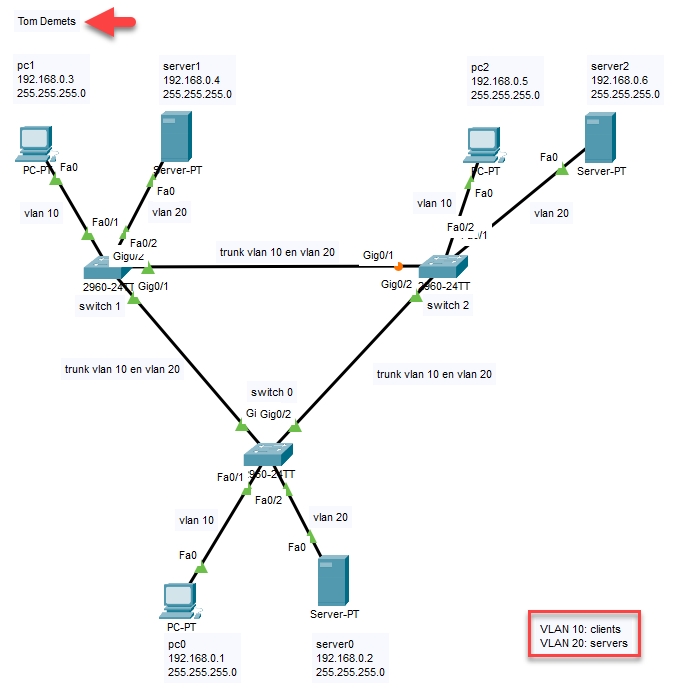

Zelfstandige oefening
Dit is het deel van het labo dat je indient. De zes oefeningen hiervoor waren begeleid, deze bouw je
zelf.
Download het startbestand en open het in Cisco Packet Tracer.
Wat je maakt
Bouw het netwerk hieronder volledig na, vertrekkend van het startbestand.

Het netwerk dat je nabouwt, met VLAN 10 voor de clients en VLAN 20 voor
de servers
Aandachtspunten
- De pc's zitten in VLAN 10, de servers in VLAN 20.
- Tussen de switches ligt telkens een trunkpoort.
- Spanning Tree staat aan op alle switches.
- De naam van een component doet ertoe. Geef pc1 dus niet het IP-adres van pc0.
- Noteer je naam in Packet Tracer. De overige notities uit de figuur, zoals pc0, hoef je niet
over te nemen.
Indienen
Klik op Check Results. Bij 100% completion is je oefening klaar en dien je je bestand in
via de opdracht in Orion.